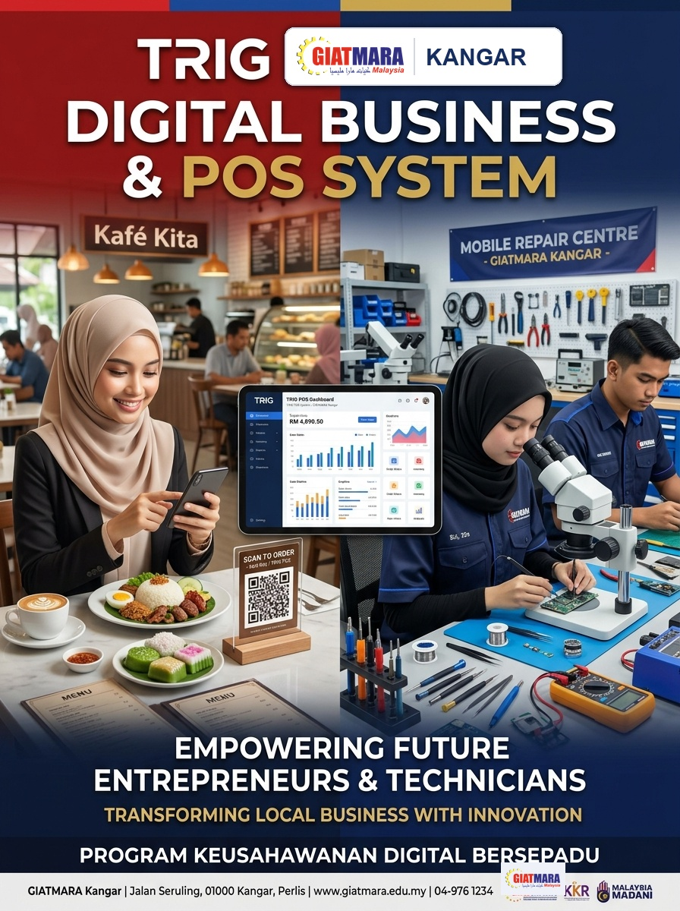
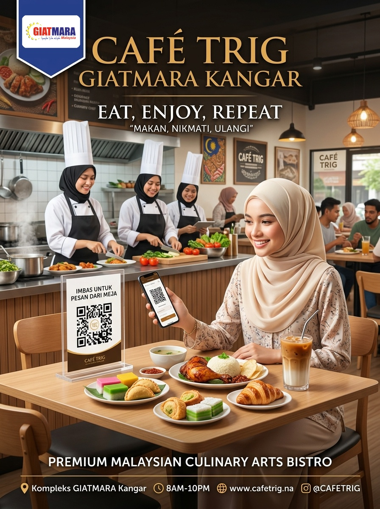
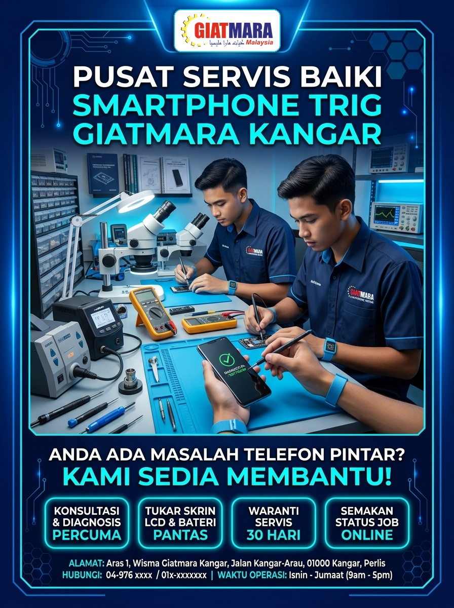

GIATMARA KANGAR, PERLIS
SISTEM POS & PENGURUSAN PERNIAGAAN DIGITAL BERSEPADU
Platform pintar yang memperkasa operasi jualan, inventori berpusat dan pemantauan perniagaan usahawan pelatih GIATMARA Kangar secara digital dan automatik.

1. CAFÉ & SENI MASAKAN
- ✓ Imbas QR di Meja (Pesan dari Telefon Pintar)
- ✓ Kitchen Display Screen (Automasi Pesanan)
- ✓ Resit Thermal & Digital dengan QR Bayaran
2. BAIKI SMARTPHONE
- ✓ Penjejakan Status Job (REP-) Secara Live
- ✓ Diagnosis Multimeter & Mikroskop 4K
- ✓ Pengurusan Spare Parts & Waranti 30 Hari
Imbas kod QR ini untuk mencuba dan melihat demo sistem POS secara langsung di pelayar web anda!
https://wmdir2026.github.io/TRIG_GM_Kangar/
CAFÉ TRIG GIATMARA KANGAR
EAT • ENJOY • REPEAT
Nikmati keenakan menu istimewa hasil air tangan pelatih Seni Masakan & Bakeri GIATMARA Kangar dengan kemudahan pesanan digital moden di meja anda.

DUDUK DI MEJA
Pilih meja santai anda di dalam café yang selesa.
IMBAS KOD QR
Imbas QR di atas meja & pilih menu makanan/minuman kegemaran.
HIDANGAN DIHANTAR
Pesanan dihantar terus ke dapur & sampai ke meja anda!
Nasi Ayam Istimewa • Kopi Aromatik Karamel • Pastri Croissant Panas • Minuman Segar
Waktu Operasi: Isnin – Jumaat (8.30 Pagi – 4.30 Petang)
PUSAT SERVIS BAIKI SMARTPHONE
TELEFON ANDA ROSAK ATAU PECAH?
Dapatkan rawatan peranti profesional oleh pelatih juruteknik terlatih GIATMARA Kangar menggunakan peralatan makmal ESD & mikroskop stereo terkini.

1. KONSULTASI & DIAGNOSIS PERCUMA
Pemeriksaan komponen & punca sebenar kerosakan tanpa sebarang caj tersembunyi.
2. TUKAR LCD & BATERI SEGERA
Alat ganti berkualiti tinggi untuk Samsung, iPhone, Oppo, Vivo, Redmi dan lain-lain.
3. WARANTI SERVIS 30 HARI
Jaminan servis rasmi GIATMARA berserta resit sistem bercetak dan kod QR pengesahan.
4. PENJEJAK STATUS LIVE (REP-)
Semak status pembaikan bila-bila masa dari telefon anda tanpa perlu datang berulang kali.
Imbas kod QR ini dan masukkan No. Job (cth: REP-2026-00001) atau No. Telefon untuk semakan live!
Waktu Operasi Bengkel: Isnin – Jumaat (9.00 Pagi – 5.00 Petang)